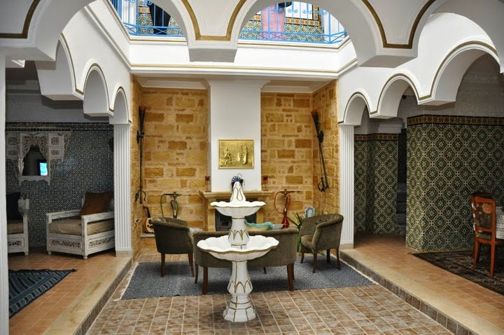
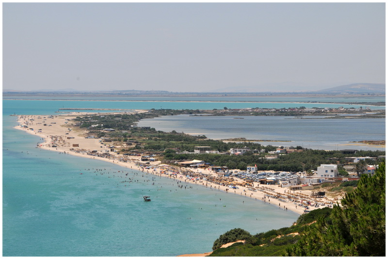
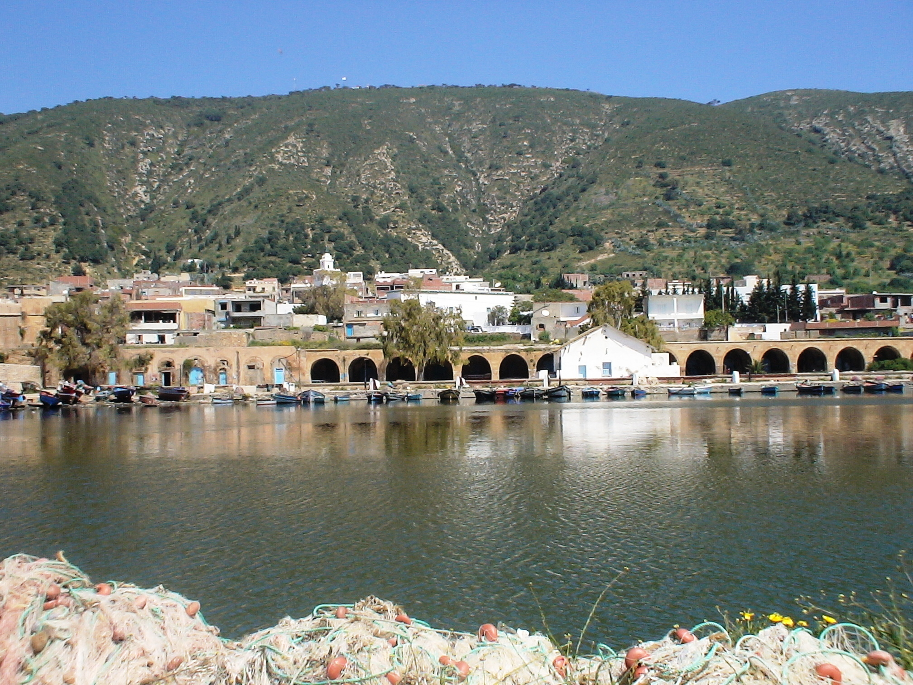
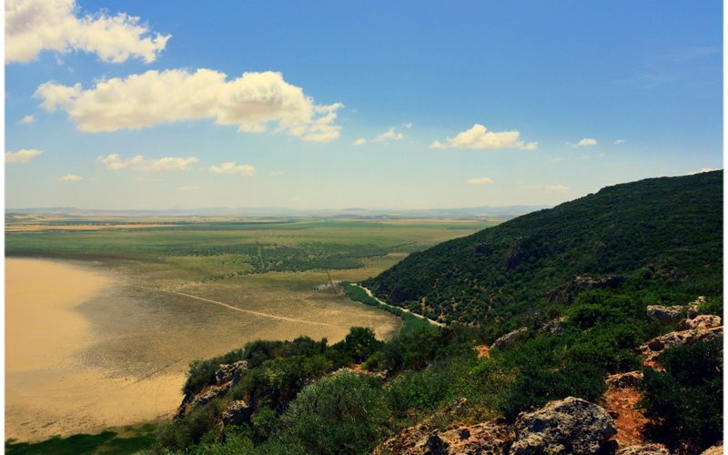

Située entre la méditerranée et le lac Bizerte, à la pointe nord de la Tunisie, la ville de Bizerte est une destination touristique incontournable dans ce pays. Grâce à ses plages, ses forêts et son lac, cette ville côtière offre notamment aux touristes un large choix d’activités à faire et de choses à voir. Pour votre future escapade en Tunisie, voici le top 5 des endroits à ne surtout pas manquer à Bizerte.
Dar El Kasbah, Bizerte, Tunisie
Charmante maison d’hôte nichée au cœur de la médina de Bizerte, Dar el Kasbah est l’endroit rêvé où séjourner quand on aspire à des vacances authentiques, aux couleurs de la Tunisie. Avec une architecture et une décoration typiquement tunisienne, la maison prend des airs de Riad et ne vous laisseront pas insensibles. Des éléments architecturaux et de décoration d’exception, des volumes intérieurs tout aussi exceptionnels, une architecture arabesque et des meubles de style, voilà ce qui lui confère ce charme indéniable. Si en été, vous pourrez profiter de la fraicheur des lieux, les autres saisons, la chaleur et l’ambiance conviviale qui y règnent réchaufferont vos cœurs. De plus, Dar el Kasbah jouit d’une situation privilégiée pour découvrir les coins et les recoins de la médina et du quartier historique et rejoindre rapidement les belles plages de Bizerte, dont l’incontournable Sidi-Selem ainsi que le centre-ville et les plus beaux sites touristiques de la ville. Wahida et son mari italien y accueillent chaleureusement les touristes depuis 2010. Vous serez reçus dans l’une des 4 chambres composant la maison d’hôte. Chacune comprend une salle douche privée, un climatiseur et un téléviseur avec récepteur indépendant. En option, les propriétaires vous proposent de délicieux petits déjeuners, des spécialités culinaires tunisiennes et même des soirées tunisiennes avec une danseuse orientale.
Mausolée de Sidi Ali El Mekki, Bizerte, Tunisie
Parmi les lieux à ne pas manquer à Bizerte figurent aussi le Mausolée de Sidi Ali El Mekki. C’est un lieu-dit près de la ville de Ghar El Melh, situé à environ une heure de route de Bizerte, sur le cap du même nom, à l’entrée nord du golfe de Tunis. Ce célèbre mausolée est construit autour d’une grotte à flanc de montagne. Il était un lieu de retraite d’un marabout arabe, qui s’y était installé en contemplatif et avait enseigné les préceptes de l’Islam. Aujourd’hui, Sidi Ali El Mekki est considéré comme un des plus surprenants marabouts de Tunisie, un lieu magique de dévotion, utilisée pour diverses cérémonies telles que les circoncisions ou pour des prières. On y vient pour demander l’intercession du saint en allumant des bougies. Au cours de votre visite, pensez à respecter les rituels. Vous pourrez découvrir la grotte et la sépulture du Wali Salah et y réciter une prière si vous le souhaitez. La plage de Sidi Ali El Maki est à seulement 20 minutes du mausolée. Vous aurez le loisir de profiter d’une plage de sable fin, belle et conviviale et même de découvrir des criques turquoise et cristallines, isolées et plus paisibles en vous aventurant plus loin, vers la gauche de la plage.
Le musée des zones humides à Ghar El Melh, Bizerte, Tunisie
Quand on séjourne au gouvernorat de Bizerte, le musée des zones humides situé à Ghar El Melh, à quelques minutes de la ville est aussi un passage obligé. Baptisé « Dar El B’hira », ce musée a été aménagé dans l’ancien fort Ottoman, près du vieux port de Ghar-El-Melh et a ouvert ses portes en 2013. Composé de deux salles, découvrez tout ce qu’il faut savoir sur a diversité des zones humides tunisiennes en général dans la première salle et sur la lagune de Ghar El Melh dans la seconde. La lagune en question est un site extrêmement riche en faune et en flore, se distinguant par des activités socioculturelles remarquables et exceptionnels dans la région ; et classé sur la convention de Ramsar, depuis 2007. La visite du musée vous permettra ainsi d’en apprendre un peu plus sur les oiseaux migrateurs, les poissons et les zones humides en Tunisie. Un prototype de système d’irrigation des oasis d’Ibn Chabbat est même visible dans la première salle du musée. Les activités agricoles et la pêche à Ghar El Melh, l’activité corsaire en Méditerranée et l’histoire de la région, avec une représentation ludique en sons et lumières pour les enfants, n’auront également plus de secrets pour vous à la sortie du musée.
Le Parc Naturel Ichkeul, Bizerte, Tunisie
Situé au nord de la Tunisie, près de Bizerte, le lac Ichkeul et son Parc National est une attraction phare à ne pas manquer dans la région. Le site est devenu un Parc National en 1980 et ne cesse depuis d’attirer les visiteurs. Au cœur de ce fameux parc tunisien à Bizerte, il y a quelques 83 km² de lac, 30 km² de marais et 13 km² de montagne « l’Ichkeul », avec un point culminant à 511m à découvrir. Lors d’une escapade dans ce territoire remarquable, vous pourrez admirer le lac Ichkeul, dernier vestige d’une chaîne de lacs autrefois étendu à travers l’Afrique du nord, et relié par le canal de Tinja au lac de Bizerte, lui-même relié à la mer Méditerranée. La montagne Ichkeul, une formation géologique unique en son genre dans la région est également très intéressante à explorer. Son origine mystérieuse reste inexpliquée pour les géologues. Avec ses pentes abruptes, boisées par les oliviers, les caroubiers sauvages, les entisques, les euphordes, les capriers et les bruyères et ses nombreuses sources d’eau chaude, elle surprend les curieux et les amoureux de la nature. La montagne est aussi habitée par les animaux tels que les chacals, les renards, les sangliers, les buflles, les porcs épics… Le parc de la zone humide d’Itchkeul est aussi très prisé par les oiseaux migrateurs de la Méditerranée comme les rarissimes poules sultanes et sarcelles marbrées et les espèces plus communes telles que les oies sauvages, les cigognes, les flamants roses, les canards sauvage… Vous en apprendrez davantage à l’écomusée du parc. Le site de l’Ichkeul est inscrit au patrimoine mondial et classé site protégé par l’UNESCO, dans la catégorie des « Zones humides ».
Le vieux port de Bizerte, Tunisie
.jpg)
Le vieux port de Bizerte est le cœur de l’ancienne ville de Bizerte, un endroit incontournable quand on séjourne dans cette magnifique ville nord-tunisienne. Accessible depuis la médina, c’est un lieu plein de charme, considéré comme l’un des plus beaux de la Tunisie pour certains. Le quai forme un arc de cercle longeant les remparts terre de Sienne de la casbah et les basses maisons blanches. Les murs de la kasbah, ancienne forteresse protégeant le port, telle une imposante sentinelle, impressionnent dès l’entrée du port. A l’extrémité nord de l’avenue Habib Bougafta, on découvre le canal reliant la mer au port dont l’entrée est protégée par le fortin el-Hanni, ou ksiba, à la forme arrondie et avec une tour rectangulaire. Sur la place Slahedine Bouboucha se trouve une fontaine du XVIIe siècle. Les jolies maisons blanches, les cafés et les grosses barques aux couleurs vives organisés autour du petit bassin du port baignent dans une ambiance animée, comme on en trouve que dans les petits ports de pêche. Sur le quai, on retrouve les marchands et les boutiques de petits bijoux, les cafés où les hommes fument la chicha en bavardant entre eux. Bref, le port de Bizerte ne manquera pas de vous séduire par son animation et son authenticité.